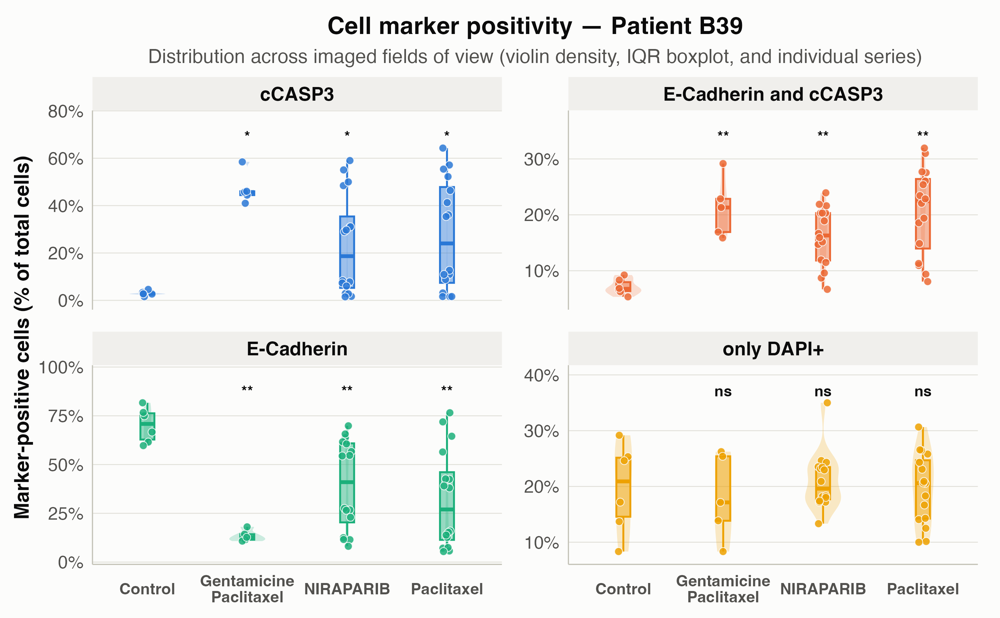
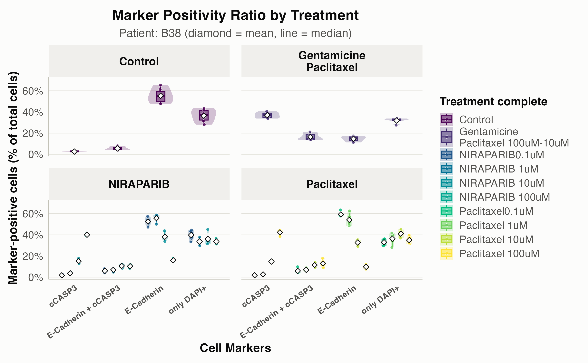
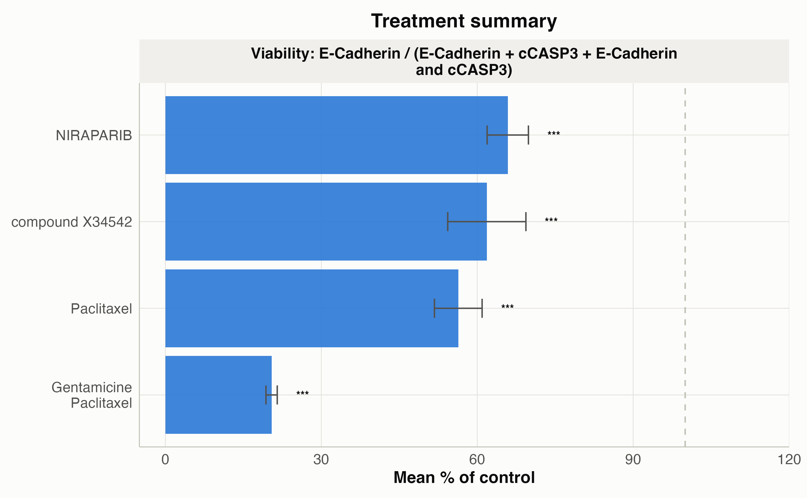

5-Minute Quickstart
drugsens automates the processing, quality control,
control normalization, and dose-response visualization of single-cell
fluorescence microscopy data exported from QuPath,
following the protocol in Labrosse et al. (2024) (doi:10.1016/j.xpro.2024.103274).
1. Import and Bind QuPath CSV Exports
library(drugsens)
example_dir <- system.file("extdata/to_merge/", package = "drugsens")
bind_data <- data_binding(
path_to_the_projects_folder = example_dir,
files_extension_to_look_for = "csv"
)
head(bind_data[, c("PID", "Tissue", "Treatment", "Concentration1", "ConcentrationUnits1", "Name")])
#> PID Tissue Treatment Concentration1 ConcentrationUnits1 Name
#> 1 A8759 Spleen Control <NA> <NA> onlyDAPIPositve
#> 2 A8759 Spleen Control <NA> <NA> onlyDAPIPositve
#> 3 A8759 Spleen Control <NA> <NA> onlyDAPIPositve
#> 4 A8759 Spleen Control <NA> <NA> onlyDAPIPositve
#> 5 A8759 Spleen Control <NA> <NA> onlyDAPIPositve
#> 6 A8759 Spleen Control <NA> <NA> onlyDAPIPositve2. Count Marker-Positive Cells and Reshape to Long Format
counts_df <- make_count_dataframe(bind_data)
long_df <- change_data_format_to_longer(counts_df)
head(long_df[, c("PID", "Tissue", "Treatment_complete", "marker_positivity", "marker_positivity_ratio")])
#> # A tibble: 6 × 5
#> PID Tissue Treatment_complete marker_positivity marker_positivity_ra…¹
#> <chr> <chr> <chr> <chr> <dbl>
#> 1 A8759 p.wash compoundX3454210uM onlyDAPIPositve_ratio_… 0.338
#> 2 A8759 p.wash compoundX3454210uM E-Cadherin_ratio_of_to… 0.6
#> 3 A8759 p.wash compoundX3454210uM cCASP3_ratio_of_total_… 0.0154
#> 4 A8759 p.wash compoundX3454210uM E-Cadherin and cCASP3_… 0.0462
#> 5 A8759 p.wash compoundX3454210uM onlyDAPIPositve_ratio_… 0.354
#> 6 A8759 p.wash compoundX3454210uM E-Cadherin_ratio_of_to… 0.569
#> # ℹ abbreviated name: ¹marker_positivity_ratio3. Inspect Quality Control (QC) Distributions
Plot per-marker positivity distributions for a single patient
(get_QC_plots()):
get_QC_plots(
long_df,
isolate_a_specific_patient = "B39",
x_plot_var = "Treatment",
compare_to_control = TRUE,
save_plots = FALSE
)
Or inspect marker positivity across treatments for a patient
(get_QC_plots_parsed_merged_data()):
qc_list <- get_QC_plots_parsed_merged_data(
long_df,
list_of_columns_to_plot = "marker_positivity_ratio",
fill_color_variable = "Treatment_complete",
isolate_specific_patient = "B38",
save_plots = FALSE,
verbose = FALSE
)
qc_list[["B38.marker_positivity_ratio"]]
4. Normalize Target Cell Viability to Control & Fit Dose-Response
Select your dead/dying marker(s) (dead_markers) and
viable cancer marker(s) (viable_markers) in
normalize_to_control() to compute target cancer cell
viability relative to Control (100%):
norm_df <- normalize_to_control(
long_df,
dead_markers = c("cCASP3", "E-Cadherin and cCASP3"),
viable_markers = "E-Cadherin",
control_treatment_name = "Control",
consensus_only = TRUE
)
plot_treatment_summary(norm_df, compare_to_control = TRUE)
Where to Go Next: Detailed Tutorials
| Tutorial | What You Will Learn |
|---|---|
| 1. QuPath Setup & Filename Metadata Conventions | How to export single-cell measurements from QuPath
(v0.4/v0.5+), structure filenames for single drugs and two-drug
combinations, and customize marker relabeling via
make_run_config(). |
| 2. End-to-End Quality Control & Feature Inspection | How to audit cell counts, compare marker ratios across
patients and tissues, run statistical QC checks against
Control, and inspect nuclear/cellular morphology metrics
from QuPath. |
| 3. Cohort Normalization, Dose-Response Curves & Statistics | How to normalize multi-patient screens
(normalize_to_control()), fit LOESS and 4-parameter
log-logistic (4pl) Hill curves with IC50 estimates
(plot_dose_response()), and build heatmaps and ranked
summaries. |